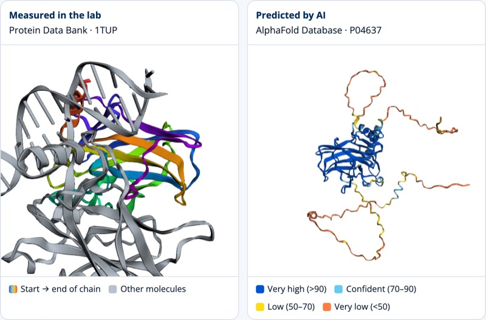
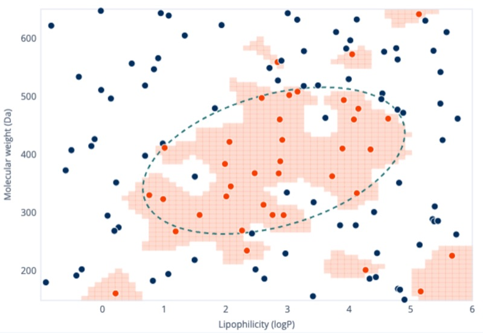
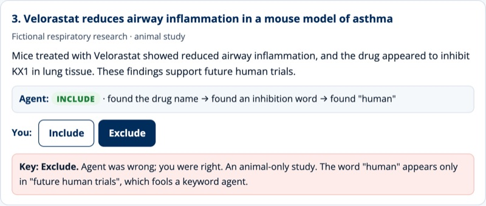
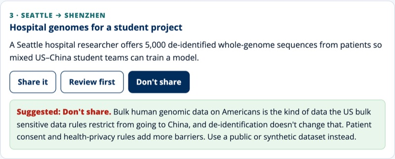

AI for Life-Science Professionals
Hands-on labs for scientists, lab staff, and anyone in biotech or health who wants to use AI with confidence. Everything runs in your browser. There's nothing to install, no account to create, and no cost.
The labs

Lab 1 · StructureProtein Structure Explorer
Load real proteins from the Protein Data Bank, then compare them with AI-predicted structures from AlphaFold. See where the AI is confident and where it isn't.
Open lab →
Lab 2 · Machine learningAssay Hit Predictor
Train a model to predict which compounds are active, using simulated screening data. Change the amount of data, the noise, and the model's flexibility, and watch it overfit.
Open lab →
Lab 3 · AI agentsLiterature Triage Agent
A simple AI agent sorts research abstracts for a review. You check its work. Find where it misses things, and see why a human still has to read the papers.
Open lab →
Lab 4 · Data governanceCan This Data Cross the Border?
Eight short scenarios from US–China research collaboration. For each one, decide whether the data can be shared, needs review, or should stay put.
Open lab →Companion course
How it works
Learn by doing
Each lab has a short goal, a working tool, and a few tasks. You'll build or test something, not just read about it.
Go at your own pace
Built for working adults. Every lab stands on its own, so start with whichever one fits your job.
Check your thinking
Each lab ends with reflection questions you can bring to your team, a workshop, or a CityUx seminar.
The data rule
About this prototype
This is an early prototype from CityUx, City University of Seattle's open learning space for workshops, seminars, and micro-credentials. The content hasn't yet been reviewed by a life-science domain expert. If you spot something wrong, please open an issue.